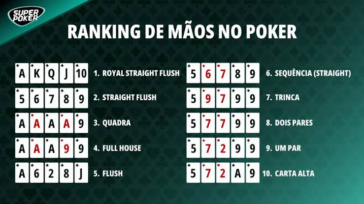

O pôquer é muito mais do que um jogo de cartas: é um esporte da mente que mistura estratégia, psicologia, raciocínio lógico e tomada de decisões sob pressão. Se você é iniciante e quer dar os primeiros passos nas mesas, este guia básico vai te ajudar a entender a dinâmica do jogo mais popular do mundo, o Texas Hold'em. O Objetivo do Jogo No pôquer, o objetivo principal é construir a melhor combinação de cinco cartas possível ou convencer os outros jogadores a desistirem de suas mãos antes do confronto final (showdown). Cada jogador recebe 2 cartas privadas (que só ele pode ver) e, ao longo das rodadas, até 5 cartas comunitárias são viradas na mesa para que todos as utilizem em suas combinações. A Hierarquia das Mãos (Do Menor para o Maior) Para jogar bem, memorizar a ordem das forças das mãos é essencial: Carta Alta: Quando ninguém forma nenhum par ou combinação, ganha a maior carta individual. Um Par: Duas cartas de mesmo valor (ex: dous Áses). Dois Pares: Dois pares diferentes na mesma mão (ex: dois Valetes e dois Dez). Trinca: Três cartas do mesmo valor (ex: três Reis). Sequência (Straight): Cinco cartas em ordem numérica consecutiva, de naipes diferentes. Flush: Cinco cartas do mesmo naipe, não necessariamente em sequência. Full House: Uma trinca combinada com um par (ex: três 8 e dois 5). Quadra: Quatro cartas do mesmo valor (ex: quatro Damas). Straight Flush: Cinco cartas em sequência do mesmo naipe. Royal Flush: A sequência máxima do mesmo naipe (10, Valete, Dama, Rei e Ás). Como Funciona uma Rodada (As Etapas da Mão) Uma rodada de Texas Hold'em segue uma sequência fixa de apostas e distribuição de cartas: Pré-Flop: As 2 cartas privadas são distribuídas a cada participante. A primeira rodada de apostas começa. Flop: As 3 primeiras cartas comunitárias são abertas na mesa. Ocorre a segunda rodada de apostas. Turn: A 4ª carta comunitária é revelada. Ocorre a terceira rodada de apostas. River: A 5ª e última carta comunitária é revelada. Ocorre a última rodada de apostas. Showdown (Confronto): Os jogadores restantes mostram suas cartas e quem tiver a melhor combinação de 5 cartas leva todas as fichas acumuladas no centro (o pote). Ações Básicas Durante o Jogo Em cada rodada de apostas, dependendo do momento, você pode escolher uma das seguintes ações: Desistir (Fold): Abrir mão de suas cartas e sair da rodada atual para economizar fichas. Mesa / Passar (Check): Passar a vez sem apostar mais fichas (só é possível se ninguém tiver apostado antes de você naquela rodada). Apostar (Bet): Colocar fichas no pote quando ninguém ainda apostou na rodada. Pagar (Call): Igualar o valor da aposta feita por outro jogador. Aumentar (Raise): Superar o valor da aposta feita por um adversário, forçando os outros a pagarem mais para continuar na mão. Dicas Essenciais para Iniciantes Não jogue todas as mãos: Um dos maiores erros de quem está começando é querer ver o Flop em todas as rodadas. Seja seletivo e jogue apenas com cartas de partida fortes. A posição é fundamental: Ser o último a agir em uma rodada dá uma vantagem enorme, pois você ganha informações sobre a decisão dos adversários antes de tomar a sua. Paciência é a chave: O pôquer exige observação. Preste atenção no comportamento dos rivais mesmo quando você não estiver participando da mão.